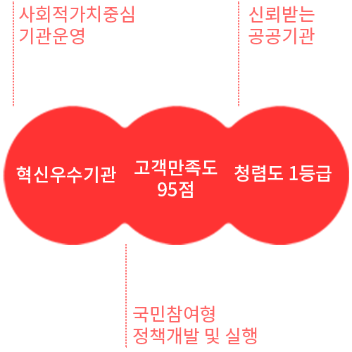

디자인의 사회적 가치
추진체계
- 국민행복과 혁신성장을 선도하는
글로벌 디자인기관
-
- 사회적가치 비전
- 디자인을 통한 사회적 가치 창출과
국민 삶의 질 향상
기본방향 및 목표(2025년)

추진전략 및 전략과제
- 일자리창출과 고용의 질 개선
: 일하고 싶은 디자인 일자리 만들기
- 01 디자인분야 민간일자리 확대 체계정비
- 02 디자인 혁신을 통한 일자리 창출
- 균등기회.사회통합주도
: 차별 없이 함께하는 조직문화 디자인
- 03 중장기 인력운영 계힉수립
- 04 차별해소 제도개선으로 성과창출
- 안전 및 환경혁신
: 안전사회,지속가능한 사회를 위한 디자인
- 05 수요자체감 안전.재난관리
- 06 지속가능한 환경에 기여하는 기관운영
- 07 신뢰할 수 있는 기관 정보보안관리
- 상생협력 및 지역발전
: 국민과 함께하는 사회 공유가치 창출디자인
- 08 지역기반 사회공헌 활동 추진
- 09 디자인계와 수요산업계 동반성장 지원
- 10 사회적 경제조직 활성화 지원
- 11 지역사회연계 프로그램 개발 및 실행
- 윤리.인권경영
: 국민인권과 윤리기반 디자인기관 운영
- 12 윤리기반 경영체계구축
- 13 인권존중을 위한 기관 중장기계획 수립